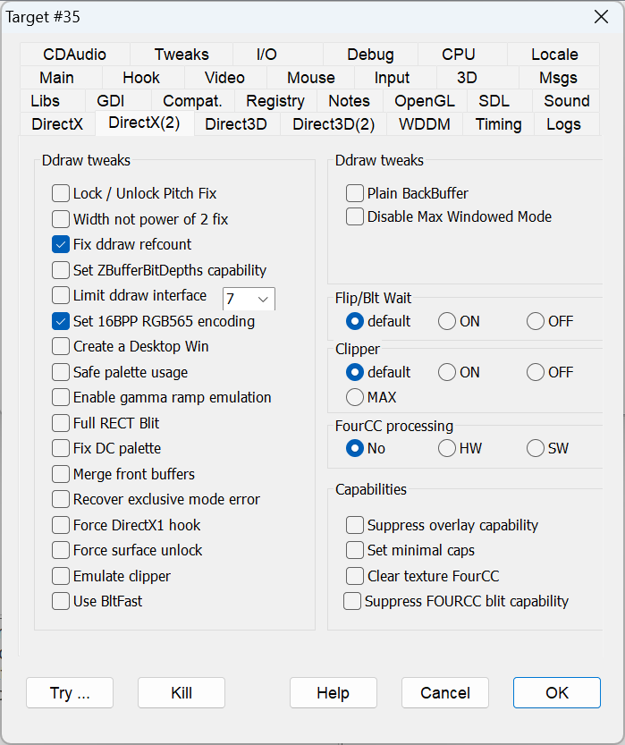

|
Lock/Unlock Pitch Fix |
FIXPITCH |
Some programs ignore the pitch value returned by the DirectDrawSurface::Lock method and fill the graphics buffer according to an incorrect predetermined pitch value. This discrepancy is caused when DxWnd creates virtual surfaces with varying pitch values that may not correspond to the original values when creating the surface on a different memory type (system memory and video memory). When this is happening to a hooked program, some elements may appear diagonally skewed. Note how the left border of the text widget in the figure below goes down and to the right rather than straight down, distorting the contained text as well. This flag resolves the issue by copying the graphic scan lines to the proper memory offset. For additional examples, see Examples > SnowBoard: Racer. |
|
Width not power of 2 fix |
POWER2WIDTH |
Some programs produce texture surfaces of odd sizes, which are generally not supported but can be detected when the textures have an incorrect aspect ratio. This flag resolves the issue by copying the graphic scan lines to the proper memory offset. The most notable example of this issue is in "Midtown Madness". |
|
Fix ddraw refcount |
FIXREFCOUNTER |
Decrements the reference counter of some objects to properly track all of DxWnd's service objects. |
|
Set ZBufferBitDepths capability |
SETZBUFFERBITDEPTHS |
The dwZBufferBitDepths is an obsolete field in the DirectDraw surface descriptor. It is no longer set and should be ignored, but some old programs rely on the value of this field and may crash if the field is empty (contains the NULL value). This flag copies the value returned by the GetCaps method and places it into the dwZBufferBitDepths field. The most notable example of this issue is in "MechCommander 2". |
|
Limit ddraw interface |
LIMITDDRAW |
Instead of using a specific version of DirectDraw, some programs simply request the most recent version available on the machine. Using a version of DirectDraw that is significantly newer than what was available when the game was developed may yield poor results. This option hides newer versions of DirectDraw from the hooked program, basically allowing you to manually specify which version of DirectDraw the program should use. Choose a maximum DirectDraw version from the drop-down menu located near this option. |
|
Set 16BPP RGB565 encoding |
USERGB565 |
By default, DxWnd emulates 16bpp color with RGB555 encoding. This option forces RGB565. This option only impacts the video in emulation mode and with 16bpp color depth. |
|
No EXCLUSIVE coop level |
NODDEXCLUSIVEMODE |
When running a program in windowed mode, DxWnd suppresses the DirectDraw DDSCL_EXCLUSIVE mode in the SetCooperativeLevel wrapper, since this mode is not allowed in windowed mode. However, if windowed mode is not requested, DxWnd leaves the cooperative level flags as they are, allowing DDSCL_EXCLUSIVE cooperative mode if requested. This flag also suppresses the DDSCL_EXCLUSIVE mode in fullscreen mode (that is, when DDSCL_FULLSCREEN is set). This flag is required when running "Warhammer 40,000: Rites of War" in non-windowed fullscreen mode. |
|
Lock FULLSCREEN coop level |
LOCKFULLSCREENCOOP |
Prevents the return to the normal cooperative level in non-windowed mode, used in running "Speedboat Attack" in fullscreen mode. |
|
Create a Desktop Win |
CREATEDESKTOP |
This flag creates a window if a game doesn't bother building it and blits directly on top of the desktop. Fixes "Manx TT Super Bike" |
|
Safe palette usage |
SAFEPALETTEUSAGE |
Option to fix DirectDrawPalette use and abuse. As the name suggests, "Safe palette usage" inhibits some part of the palette handling that may cause problems in some circumstances (fixes "Speedboat Attack"). |
|
Enable gamma ramp emulation |
LOADGAMMARAMP |
Enables gamma ramp correction in DirectDraw. See Gamma control. |
|
Full RECT Blit |
FULLRECTBLIT |
In some situations it can be difficult to calculate the exact position and size of the scaled blit operations. It is then possible to force a blit on the whole window surface and check if the result is preferrable. It is used with "Ashes to Ashes" to make the HUD visible during gameplay. |
|
Fix DC palette |
FIXDCPALETTE |
The flag fixes the impossibility to apply a palette to a DC that is supposed to emulate a 8-bit video device but in reality has a different color depth. Particularly, it fixes the game "Legal Crime" . |
|
Merge front buffers |
MERGEFRONTBUFFERS |
When in fullscreen mode, the front buffers of a DirectDraw and a Direct3D8 session share the same device context so that, for instance, the program can blit elements with DirectDraw on top of a Direct3D surface. In windowed mode though, the device contexts are separated and the final result is quite different. This flag copies the Direct3D8 front buffer to the DirectDraw front buffer whenever the program performs DirectDraw operations to ensure that the expected result is achieved. This flag was used to correctly render "The Legend Of Dragon's Son". |
|
Recover exclusive mode error |
RECOVEREXCLUSIVEERR |
The flag tries to recover the DDERR_EXCLUSIVEMODEALREADYSET error condition. |
|
Forces DirectX1 hook |
FORCEDX1HOOK |
The flag forces the hooking of DirectX version 1 methods though not esplictly referenced. It fixed a possible crash on "Sci-Fi Pinball". |
|
Force surface unlock |
SURFACEUNLOCK |
The flag fixes the rendering of "HEDZ" in certain conditions. |
|
Emulate clipper |
EMULATECLIPPER |
The flag recovers the lack of robustness of the virtual backbuffers and primary surfaces by introducing a control that the blit coordinates never exceed the surface size. This prevents crashes on games that rely on the confinement of the video memory. |
|
Use BltFast |
USEBLTFAST |
By default, the DirectDraw BltFast method is emulated by a standard Blt method. This flag forces the usage of the BltFast method thet could be slightly faster when supported. |
|
Plain backbuffer |
PLAINBACKBUFFER |
The flag forces the creation of the backbuffer surfaces without the 3D capability. Fixes "Sci-Fi pinball". |
|
Disable Max Windowed Mode |
DISABLEMAXWINMODE |
The flag disables the Max Windowed Mode by invoking SetAppCompatData(12,0). |
This panel contains a set of different options meant to fine tune the wait options for Blt or Flip operations. It should be noted that when using emulated modes, a Flip operation may be easily mapped to a sequence of one or more Blt and Flip operations, so that the original wait indication may have to be remapped to the corresponding indication for another method. It should be noted that the wait is always performed for the operations on the real primary surface on the video memory. So, in direct modes, it changes the Flip/Blt to primary surface operations, while in emulated modes, it applies only to blit operations from the virtual primary surface to the real primary surface.
The following are the wait flags affected by the "Blt/Flip Wait" panel:
Blt: DDBLT_WAIT, DDBLT_DONOTWAIT
Flip: DDFLIP_WAIT, DDFLIP_DONOTWAIT
NOTE: In DirectDraw, you can specify none of the flags above but in that case, the behaviour is mapped to either a WAIT or a DONOTWAIT condition depending on the DirectDraw interface version.
|
default |
The Blt/Flip wait related flags are left unchanged. |
|
|
ON |
FORCEWAIT |
Blt/Flip operations are forced to be performed with DDBLT_WAIT/DDFLIP_WAIT flags respectively. |
|
OFF |
FORCENOWAIT |
Blt/Flip operations are forced to be performed with DDBLT_DONOTWAIT/DDFLIP_DONOTWAIT flags respectively. |
This panel contains a set of different options meant to fine tune the clipper creation options for DirectDraw operations. It should be noted that the lack of a clipper is a frequent consequence of the AERO, despite the emulation flags being properly set, the program breaks AERO at startup, a clipper creation should be attempted.
MSDN quote: One common use for a clipper is to define the boundaries of the screen or window. With a clipper that has the screen rectangle as its clip list, DirectDraw knows how to trim the sprite as it performs the blit so that only the visible portion is copied. Without a clipper object, DirectDraw does not allow you to blit the entire sprite, because part of it would fall outside the destination surface. A straight copy of the pixel values in the sprite to the destination surface buffer would result in an incorrect display and even memory access violations.
|
Default |
The clipper object is created or not according to program specifications. |
|
|
ON |
FORCECLIPPER |
Whenever the program omits the creation of a clipper object (in fullscreen programs, this is not mandatory), DxWnd forces its creation. For example, this fixes the MechWarrior 3 targeting crash when the resolution is set higher than 800x600. |
|
OFF |
SUPPRESSCLIPPING |
In some rare cases, the clipper creation may lead to screen blinks, slow operations or errors. In these cases, it is better to sacrifice AERO support and turn clipping off to let the program run. |
|
MAX |
MAXCLIPPER |
Forces the DirectDraw clip region to be the whole virtual desktop. This is necessary when the program uses the clipper area size to perform further calculations. In case of virtualized desktop, the actual clipper area does not match the scaled values, since the primary surface is as big as the whole actual desktop. Used (so far) only by "Full Pipe". |
|
No |
|
|
|
HW |
HWFOURCC |
Hardware processing. |
|
SW |
SWFOURCC |
Software processing. |
|
Suppress overlay capability |
SUPPRESSOVERLAY |
Prevents the game from detecting any hardware overlay capability. Hardware overlay is very efficient, but not very flexible. If you run a program with hardware overlay in a window, you may be able to reposition and resize the window, but the blitted surface (the content of the window) doesn't move or change. This flag makes programs ignore the hardware overlay capability so that you can move or stretch the window with expected results. The most notable example of this issue is in "Moto Racer 2". |
|
Set minimal caps |
MINIMALCAPS |
Simulates the minimal hardware capabilities similar to what's available on the VirtualPC or VMware emulators. Some older games may not support advanced features, a case where this flag can easily improve the rendering process and eliminate some artifacts. |
|
Clear texture FourCC |
CLEARTEXTUREFOURCC |
DxWnd lets you dump, edit, and replace all the uncompressed game textures. Textures compressed with a FourCC codec can't be processed this way. This flag forces the FourCC capabilities OFF in the capability query and in texture surface creation. This forces the game to use plain, uncompressed bitmap textures that can be easily tweaked. To avoid texture errors, you may need to adjust the texture flags. This flag was introduced to allow uncompressed textures for the game "The Sting!". It also trims the list to eliminate the DDPF_FOURCC entires. This fixes the rendering and text issues in Star Wars: Rogue Squardon 3D. |
|
Suppress FOURCC blit capability |
SUPPRESSFOURCCBLT |
When a game queries the device capabilities, this flag pretends that the device has no capabilities to perform flip or blit operations when the surfaces have FourCC encoded data. This is useful because FourCC codec usually works in fullscreen mode, but fails in windowed mode. |